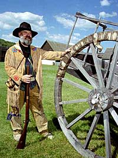
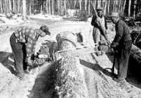
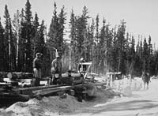

Development of the Saskatchewan Forest Industry
Forests in Saskatchewan have been used by the people and animals of the province. Before European settlers came to Saskatchewan, the Indian peoples used the forests to provide them with fuel, tools, transportation, clothing, medicine, shelter and recreation. They also believed the forest was home to a spiritual world. |
 The early European explorers in the area used the region for hunting and trapping and until 1870, the area known as Saskatchewan, was controlled by the Hudson's Bay Company. Commercial use of Saskatchewan's forests began in 1872 when The Dominion Lands Act designated Saskatchewan's first commercial forest zones. This act enabled timber to be sold. |
The first European settlers in Saskatchewan settled in the parkland area. They saw the many trees of the parkland region as a gift from nature to build houses and other buildings and as a barrier to agricultural production. The settlers cleared the land and used the trees to provide the resources to build shelters. Trees also provided wood for furniture and heat. |
 The forest industry existed in Saskatchewan as early as 1877 when a sawmill was constructed at Prince Albert. By the early 1900s logging was a part of the northern lifestyle. Four large sawmills were operating at Big River, Crooked River, Prairie River and Prince Albert. Each sawmill was located on a major waterway. During the winter, men in logging camps cut and piled logs so that horses and oxen could pull them on sleighs to the river. After spring thaw, the logs were floated down river to market. |
Easily accessible timber led to overcutting. This, coupled with a reduced demand for lumber after peak settlement activity, caused these large mills to shut down. By 1933 portable sawmills were being used to cut timber located in small, scattered tracts across Saskatchewan. The pendulum has gradually, but decisively, swung back again. |
In 1945, the Saskatchewan government decided that it needed some control over the harvesting of its valuable forest resource. It established a board to administer timber contracts and to collect royalties. In 1947 the first forest inventory of Saskatchewan's forests was undertaken. |
During the 1960s, activity in the Saskatchewan forest industry increased - a response to the increased demand for forest products.
- A waferboard plant, sawmill and plywood plant were constructed
in Hudson Bay.
- Sawmills were also constructed in Meadow Lake, Big River
and Carrot River.
- Prince Albert became home to a wood treatment plant and in 1968 a pulp mill was constructed there. The pulpmill was constructed by the Prince Albert Pulp Company, now known as Weyerhaeuser Canada Limited.
 Almost overnight, pulpwood harvest increased to 70 percent from 34 percent of the province's total wood harvest. Although sawmill production remained stable, its share of the total harvest declined to 20 per cent from 50 per cent. These proportions remain relatively constant with today's trends. |
Increased activity in the forest industry brought further development of the northern areas of the province.
- Improved roads made the north accessible for other resource
development and to tourists.
- In 1988 a paper mill was added to the pulp mill in Prince
Albert.
- In 1990 construction was begun on a pulp mill in Meadow Lake.

Currently, six large sawmills account for 85 per cent of total sawmill production in Saskatchewan. |